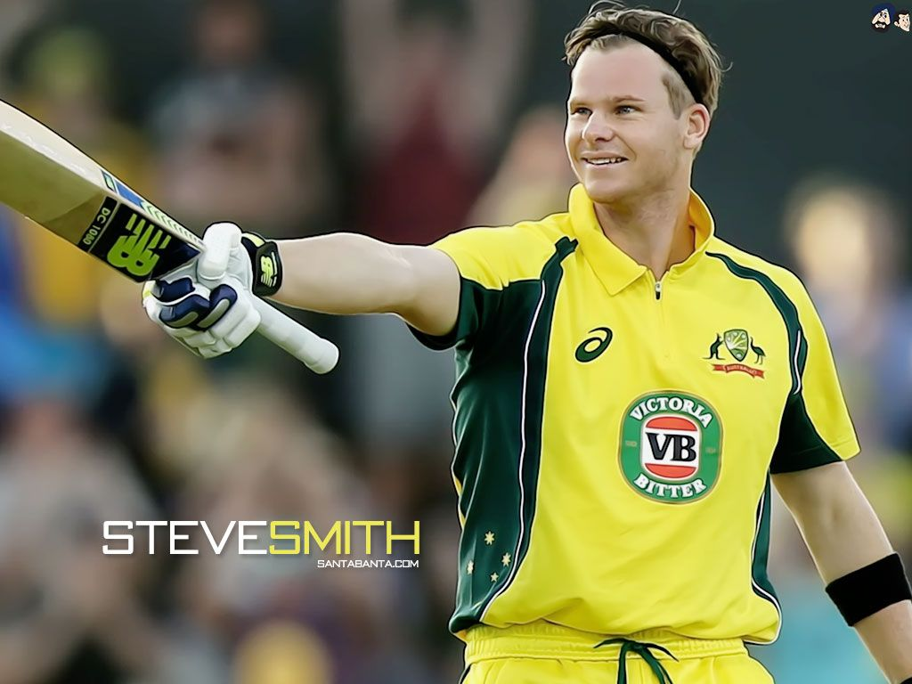
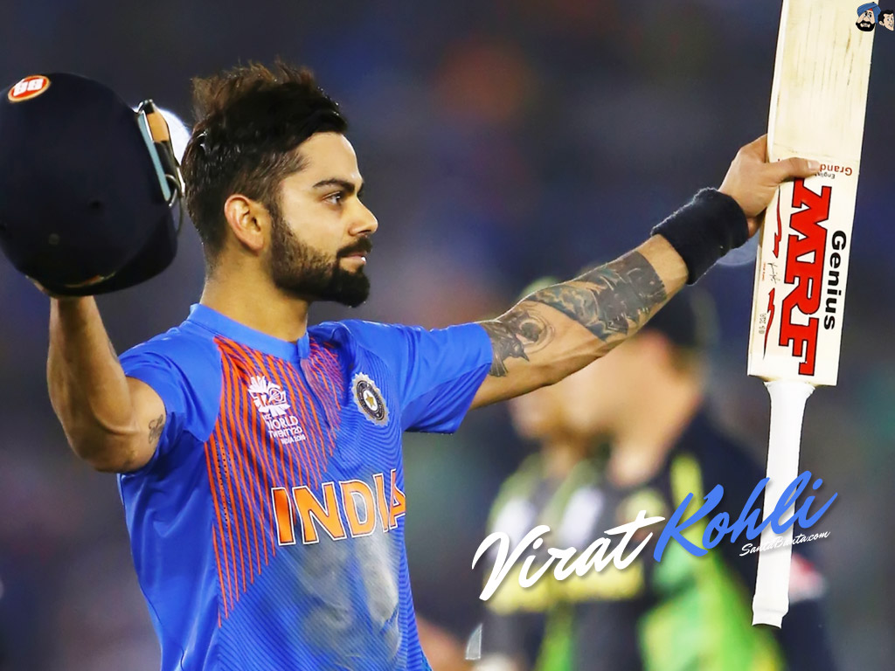
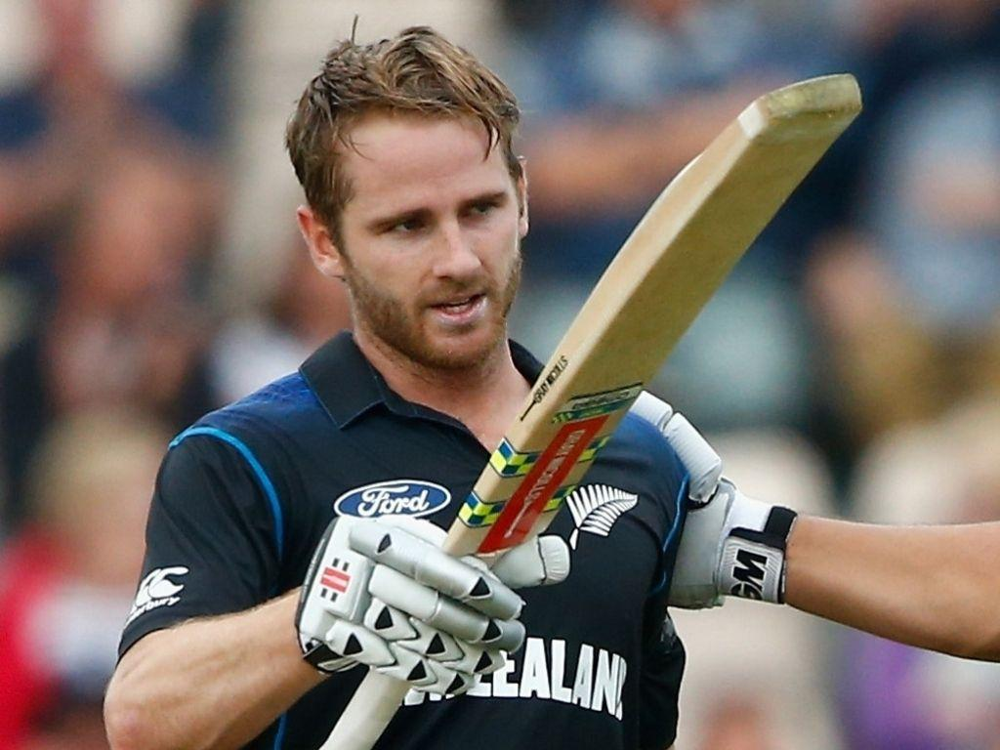
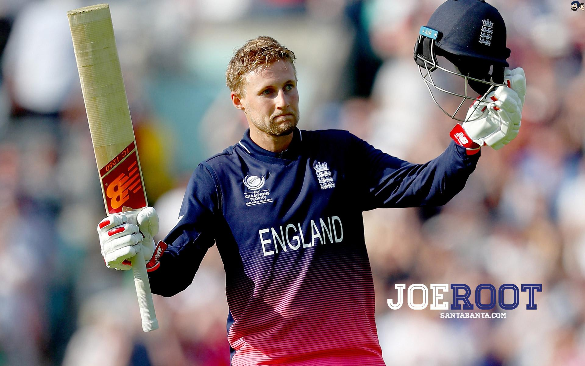

Steve Smith is the greatest test player after Sir Don Bradman. He is a former australian captain and has an average higher that 61 in tests, only second to Sir Don Bradman. He has scored most of his runs against England and India in all formats of cricket. He has scored 3 double hundreds against england in test cricket.Smith is consistently rated as one of the top-ranked Test batsmen in the world, according to the ICC Player Rankings.He has some records of his own in test cricket.He is the fastest to reach 7000 test runs, fastest to 7500 test runs and fastest to reach 27 test tons. he has scored most of his test runs against england.He has also scored 700+ plus runs in the ashes 2017 and 2019, both of them coming against england. His highest score in tests is 239 agianst england in ashes 2017/18 in the perth stadium, his highest ODI score is 164 against New Zealand and his highest T20I score is 90.
1 / 4

Virat Kohli is one of the best Indian cricketers of all time. He plays best in the ODI format of the game of Cricket. He has scored more than 12000 runs in ODI cricket. He is current Indian captain across all formats of cricket. He has been the no.1 ODI player for a long time and he is one of the few players who have an average that isnhigher than 50 inall formats of the game of cricket. He has also scored more than 7,300 runs in test cricket as of 2020. He is also the leading run taker t20Is as of 2020 getting more 3000 runs in that format. His highest test score is 254, his highest ODI score is 183 and his highest T20I score is 94.
2 / 4

Kane Williamson is the captain of New Zealand in all formats of cricket. Under him the New zealand team has gone to the World test championship finals as well as the ICC World Cup 2019 Finals. He is considered to be one of the best captains of all time because of his success, kindness and generosity. His highest score in test cricket is 251, 148 in ODI and 95 T20Is. He was the top ranked test batsman from december 2020 till early 2021.
3 / 4

Joe Root has also been the captain of england, but only in the test format of the game of Cricket. He was the first player in cricket history to score a hundred in his 98th, 99th and 100th Test match of his career. He is the most succesful test captain of england win more than 27 tests as caotain. He was also the first among cricket's fabulous four to score 8000 Test runs. He was alao the first batsman in cricket history to score a double hundred in his 100th test. His highest test score is 254, his highest ODI score is 133 and his highest T20I score is 90.
4 / 4

❮
❯